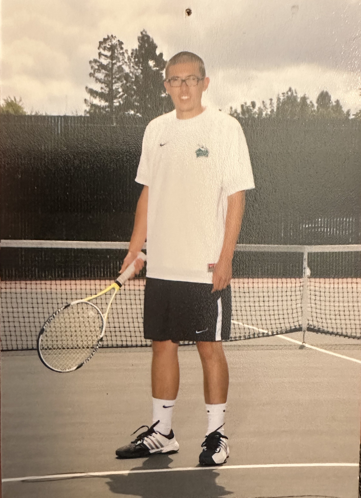
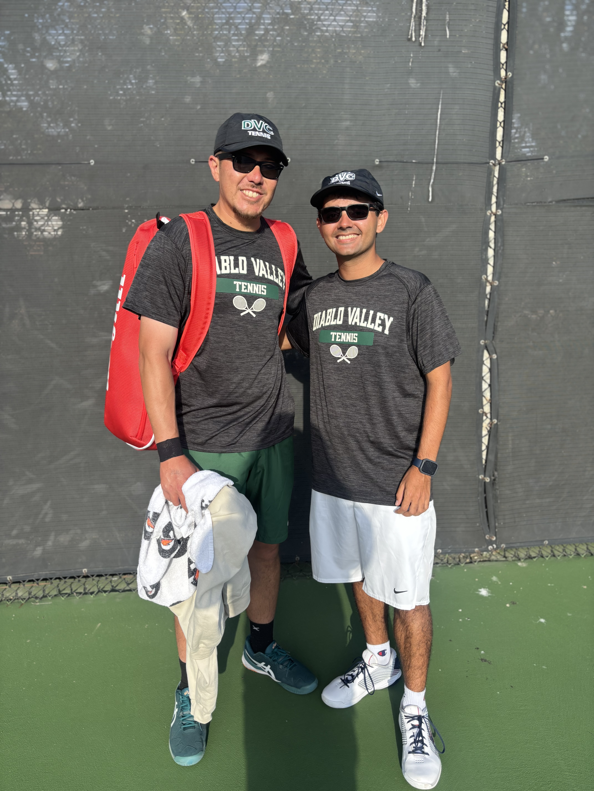
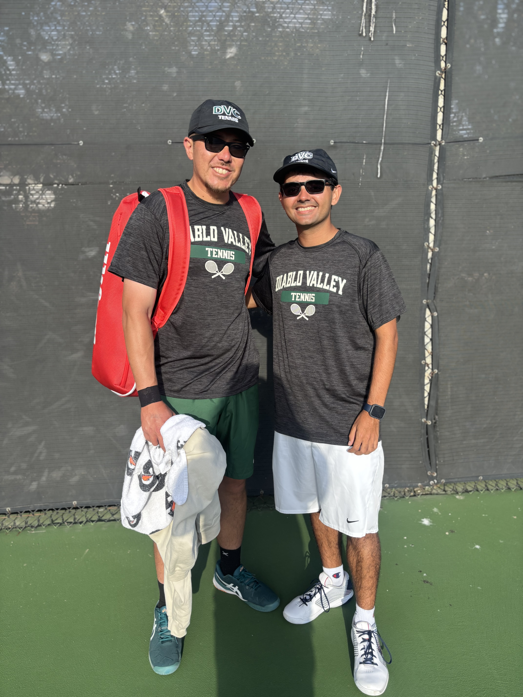
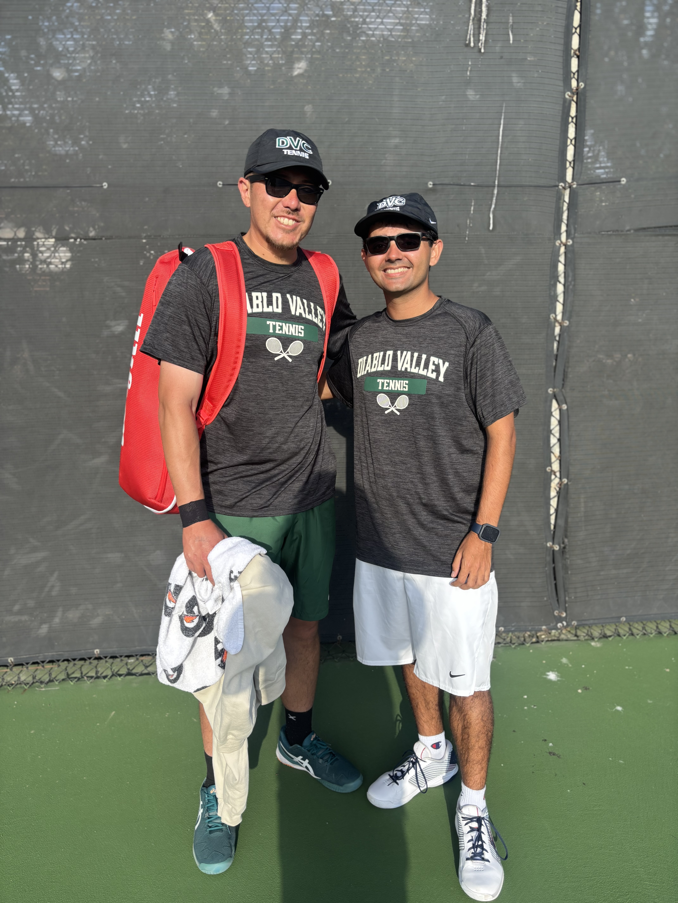

Diablo Valley College
- Tennis (2011, 2015)
- Coaches Award (2011)
- Quarterfinalist in Singles & Doubles in Big 8 Conference Tournament (2015)
- Ranked No. 18 in Singles and No. 13 in Doubles in the CCCAA Northern CA Region (2015)
- State Playoff Participant - Singles & Doubles (2015)

 

